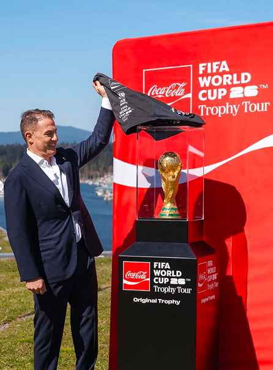

Il rito del Trophy Tour.
Uno dei contributi più significativi di Coca-Cola è il FIFA Trophy Tour organizzato dal 2006 insieme alla FIFA, che porta il trofeo della Coppa del Mondo FIFA in numerosi paesi, inclusi molti che non potrebbero mai ospitare il torneo. L’iniziativa trasforma un simbolo esclusivo in un’esperienza concreta e condivisa, permettendo a milioni di persone di avvicinarsi alla coppa e di vivere da vicino l’emozione del calcio mondiale. In questo modo, il trofeo diventa un elemento di connessione emotiva e culturale, legato a sogni, aspirazioni e senso di appartenenza collettiva, rafforzando il rapporto tra il brand e i momenti più iconici della competizione.
La partnership si distingue anche per la forte capacità comunicativa espressa attraverso campagne musicali e visive legate ai Mondiali. Coca-Cola ha contribuito a creare inni e contenuti pubblicitari diventati celebri a livello globale, trasformando le campagne in veri e propri fenomeni culturali che accompagnano l’attesa e lo svolgimento del torneo. Attraverso un marketing sensoriale fatto di musica, colori e packaging celebrativi, il brand occupa uno spazio emotivo legato ai momenti di festa e condivisione Ogni edizione della Coppa del Mondo FIFA diventa così anche un’occasione in cui la presenza di Coca-Cola si intreccia con la celebrazione globale del calcio, entrando stabilmente nell’immaginario sportivo mondiale.
